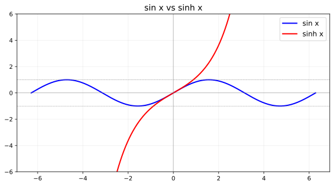
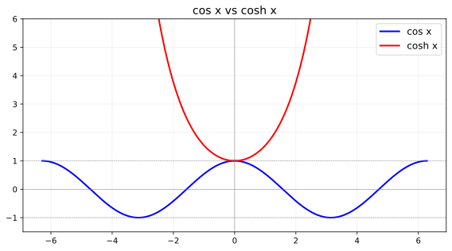
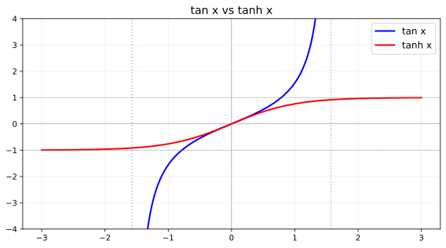
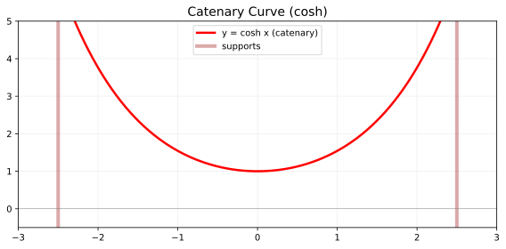
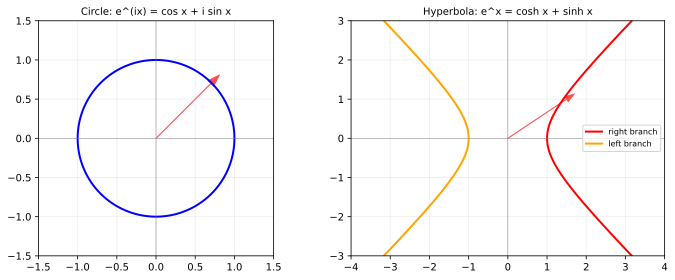

一、定义对比
sin vs sinh
| 属性 | sin x（正弦） | sinh x（双曲正弦） |
|---|---|---|
| 定义式 | (eix−e−ix)/(2i) | (ex−e−x)/2 |
| 值域 | [−1, 1] 有界 | (−∞, +∞) 无界 |
| 奇偶性 | 奇 | 奇 |
| 周期性 | 周期 2π | 非周期（虚周期 2πi） |
| 零点 | x = nπ | x = 0（唯一） |
sin x ： 转圈 → 有界震荡（蓝色） sinh x： 沿双曲线 → 指数增长（红色）

cos vs cosh
| 属性 | cos x（余弦） | cosh x（双曲余弦） |
|---|---|---|
| 定义式 | (eix+e−ix)/2 | (ex+e−x)/2 |
| 值域 | [−1, 1] 有界 | [1, +∞) 有下界 |
| 奇偶性 | 偶 | 偶 |
| 最小值 | −1 | 1 (x=0) |
cosh 像微笑曲线永远 ≥ 1；cos 像波浪在 −1 到 1 摆荡。
tan vs tanh
| 属性 | tan x（正切） | tanh x（双曲正切） |
|---|---|---|
| 定义域 | ℝ \ {π/2+nπ} | ℝ 全体实数 |
| 值域 | (−∞, +∞) 无界 | (−1, 1) 有界！ |
| 渐近线 | 垂直 x=π/2+nπ | 水平 y=±1 |
tan x ： ╱╲╱╲╱╲ 垂直渐近线隔开 tanh x： ╭──╮ 从 -1 到 1 的 S 形光滑过渡
二、函数图形对比
蓝色 = 三角函数，红色 = 双曲函数
sin x vs sinh x
cos x vs cosh x

tan x vs tanh x

悬链线 — cosh 的物理图形

圆周 vs 双曲线 — 欧拉公式对比

三、核心恒等式
⚠️ 关键差异：cos²x+sin²x=1 vs cosh²x−sinh²x=1——三角加，双曲减。
Osborne's Rule：将 sin² 替换为 −sinh² 即可从三角恒等式得到双曲恒等式。
| 公式 | 三角函数 | 双曲函数 |
|---|---|---|
| Pythagorean | cos² + sin² = 1 | cosh² − sinh² = 1 |
| 和角 | sin(x+y) = sin x cos y + cos x sin y | sinh(x+y) = sinh x cosh y + cosh x sinh y |
| 和角 | cos(x+y) = cos x cos y − sin x sin y | cosh(x+y) = cosh x cosh y + sinh x sinh y |
| 倍角 | sin 2x = 2 sin x cos x | sinh 2x = 2 sinh x cosh x |
四、导数与级数
| 函数 | 导数(三角) | 导数(双曲) |
|---|---|---|
| sin/sinh | cos x | cosh x |
| cos/cosh | −sin x | sinh x |
| tan/tanh | sec²x | sech²x |
级数：系数完全相同，三角交错符号 ±，双曲全正 +。
sin x = x − x³/3! + x⁵/5! − x⁷/7! + … (交错) sinh x = x + x³/3! + x⁵/5! + x⁷/7! + … (全正)
五、复数桥接
| 关系 | 公式 |
|---|---|
| sin(ix) | = i sinh x |
| cos(ix) | = cosh x |
| tan(ix) | = i tanh x |
eix = cos x + i sin x （旋转·圆周）
ex = cosh x + sinh x （滑动·指数增长）
六、物理应用
| 三角函数（圆周运动） | 双曲函数（双曲运动） |
|---|---|
| 简谐运动、波动方程 | 悬链线（cosh 描述悬挂链条） |
| 交流电相位 | 相对论快度（rapidity = artanh(v/c)） |
| 傅里叶分析 | 洛伦兹变换（双曲旋转） |
| 量子力学波函数相位 | 速度相加（tanh 加法公式） |
七、总览对照
| 维度 | 三角函数 | 双曲函数 |
|---|---|---|
| 几何来源 | 单位圆 x²+y²=1 | 单位双曲线 x²−y²=1 |
| 周期性 | ✅ 有（实周期） | ❌ 无（有虚周期） |
| 有界性 | sin/cos 有界 | sinh/cosh 无界 |
| 恒等式 | cos²+sin²=1 | cosh²−sinh²=1 |
| 级数符号 | 交错 ± | 全正 + |
| 物理空间 | Euclidean（旋转） | Minkowski（boost） |